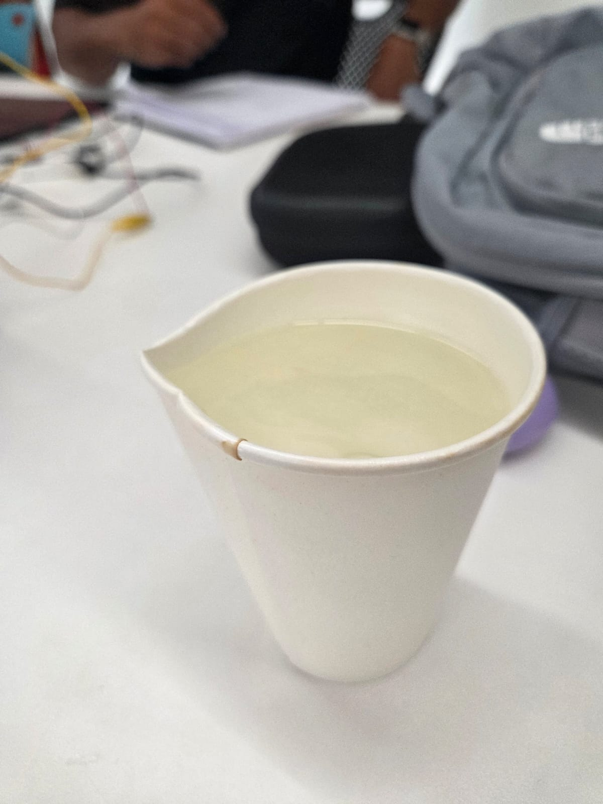
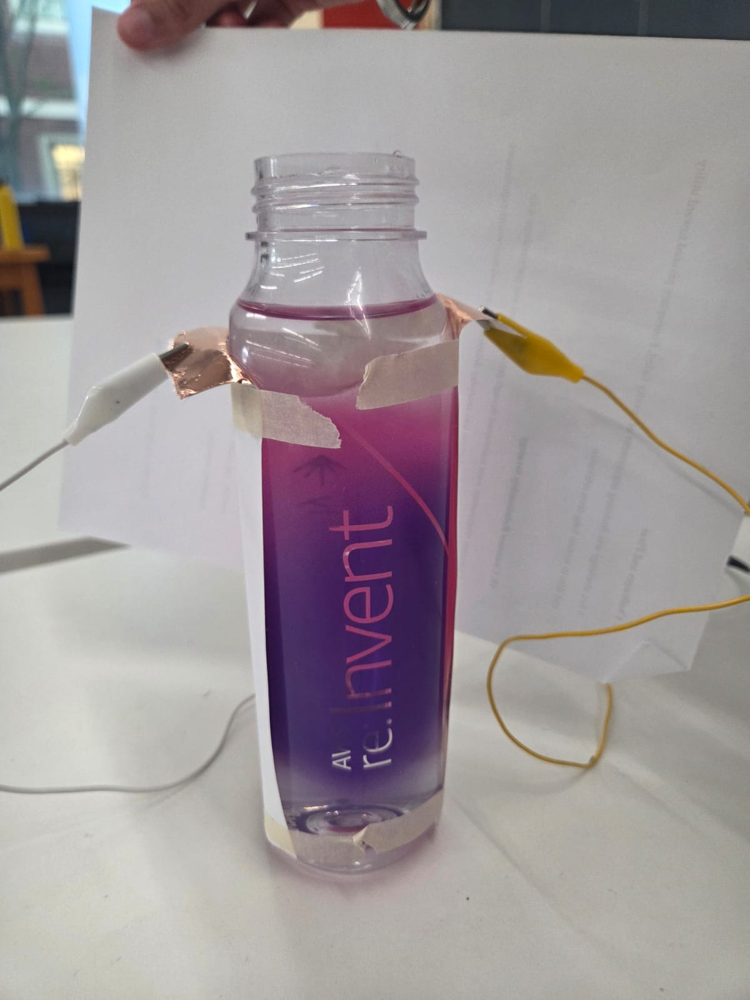
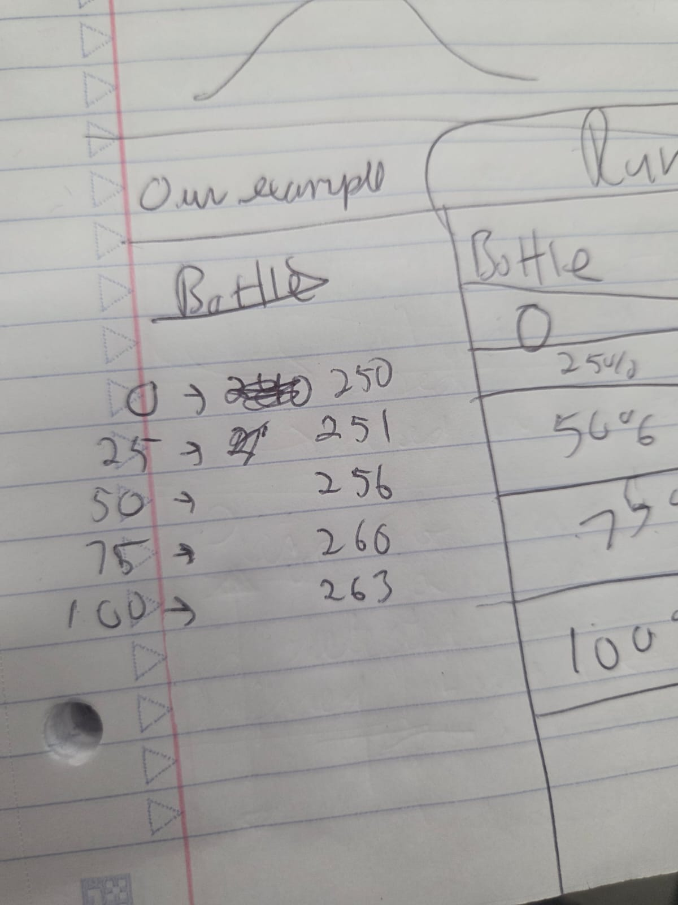
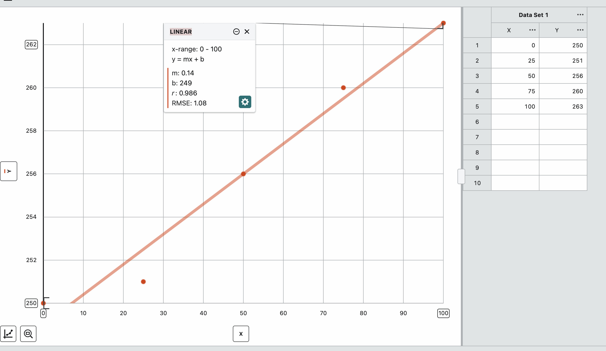
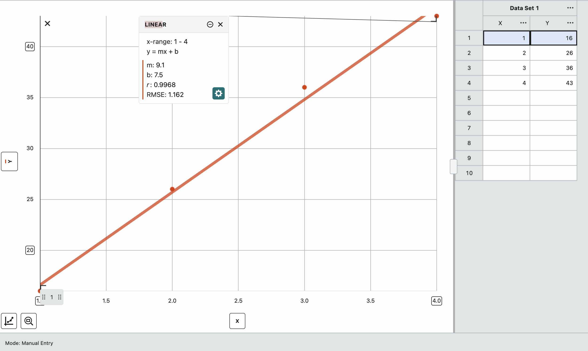

Week 6: Inputs
You have two assignments: create and calibrate a capacitive sensor and then use and calibrate another sensor.
Capacitive Sensor



I was in a group with Mathew, Claudia, and Gurmani, and our goal was to make a capacitor that can detect water levels. Claudia had an empty water bottle, so we used that to contain the water. Mathew and Claudia had the idea to put copper tapes such that they could sense the water transfering electricity, and clipping the endings together.
The first problem we had included the bottle itself getting wet, which luckily never happened again, but did affect the first set of data. We've got a bell-curve kind of data because of that. But even when the bottle was completely dry, we got the same style of data. We talked to Hannah, and we changed nearly everything; the clips, the copper tape, and we even used a spare paper cup to accurately store our water. In the end, Claudia additionally used paper to block off other things that would have affected the signals.
Below is the number chart. the 0, 25, 50, 75, and 100 are all percentage of the bottle being filled by water.


Another Sensor

I took a lot of time with this one, and it made me the most frustrated so far. My idea was to kill two birds with one stone and use a capacitator to detect motion, thus triggering a servo. I was hoping that this would end up helping my final project, as the viewer walks closer, the arm would suddenly 'pound' on the cloth painting, giving a scare.
My first thought was to use the proxemity link given on the resources page in the website to use as my 'sensor'. After looking through every resource I could find--even with the help of Victor and Hannah--Hannah eventually referred me to use not phototransistors, but a proxemic sensor, something similar to what the other Charles used. That kind of structure, with the motion sensor and the servo, has a tutorial online, which I followed and gave me the following results.